Minha segunda contribuição é um diff driver utilizado pelo comando 'git diff' para identificar funções e tokens de um código fonte em alguma linguagem de programação.
Para contextualizar, olhemos primeiro um pouco pro funcionamento interno do comando 'git diff'; quando rodamos 'git diff', um dos passos executados é o de inicializam um struct específico de acordo com uma definição de um PATTERN, feita no arquivo 'userdiff.c'. Também nesse arquivo estão declarados os PATTERNS aceitados. A definição de um PATTERN para uma linguagem de programação incluí 3 strings: O nome do pattern - convencionado a ser o nome da linguagem que o PATTERN reconhece; uma regex que reconhece a definição de funções dentro de arquivos fonte da linguagem, e uma regex que identifica tokens dentro daquela linguagem de programação.
Vejamos abaixo a declarados da definição de PATTERN, e um exemplo de declaração de PATTERN para a linguagem de programação C++.
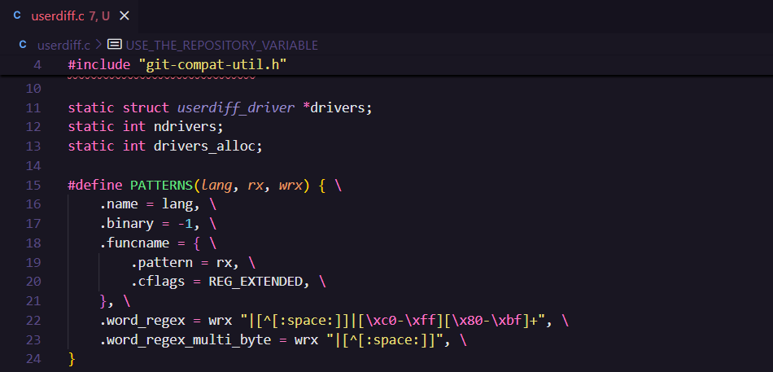 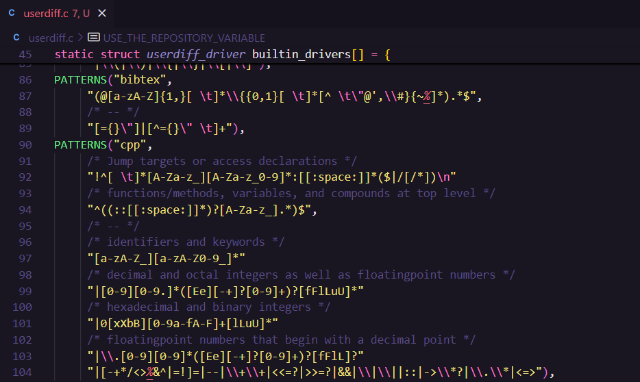
Uma das primeiras coisas que estranhei quando comecei a trabalhar nesse problema foi que a linguagem Javascript é uma das mais populares do mundo, e mesmo assim não estava ainda suportada. Todas as outras linguagens "populares" paracem ja ter suporte (C/C++, C#, Java, Go, Ruby, Swift, Rust, Bash, Python, etc...), de forma que não consegui notar nenhuma outra que não tivesse um PATTERN implementado.
Pensei logo então em procurar por tentativas antigas de contribuição ao Git para esse problema; na Lore do Git , é possível acessar antigos emails e discussões da lista, e filtar por palavras e tags específicas. Esse recurso foi indispensável para que a contribuição tivesse rumo! Em minha pesquisa, encontrei duas contribuições passadas notórias, mas que não vieram a cabo, aqui e aqui.
Outra coisa muito útil de usar a Lore é poder aprender com as dores de desenvolvedores anteriores. Por exemplo, percebi que os mantenedores do repositório são bastante criteriosos com questões como estilo de código, mensagens de commit, modo verbal das mensagens de commit. Também é possível encontrar conselhos como não tentar resolver muitos problemas de uma vez só, apenas porque parecem que podem ser resolvidos todos de uma vez.
A linguagem javascript tem uma sintaxe muito flexível. Funções podem ser declaradas em vários contextos: No escopo global, dentro de classes ou objetos, dentro de outras funções, em atribuição à variáveis, dentro de módulos, ou como callback. Também há vários tipos de funções: funções "tradicionais" (funções nomeadas, declaradas e não atribuídas), funções anônimas (literalmente, que não tem nome, declaradas por exemplo em callback), arrow functions, funções geradoras (declaradas com function* | function *), funções assíncronas (prefixadas por async) e IIFEs, por exemplo. Importante destacar que existe uma relação complexa entre os escopos possíveis de declaração para cada tipo de função em javascript, por exemplo, IIFEs não podem ser declaradas no corpo de uma classe, e essas questões foram um desafio. Para além disso, javascript é uma linguagem com vários "dialetos". As espeficicações oficiais são definidas pela ECMAScript, sendo a última spec do javascript a ES6. No jargão popular, essas versões são chamadas de "vanillaJS". Contudo, existem specs como o CommonJS, que introduzem variações na linguagem (Por exemplo, a sintaxe de 'module.exports' dentro de módulos). Não digo isso querendo entrar muito em "javascriptquês", mas o ponto é: todas essa variação introduz uma PANCADA de casos dentro da linguagem, que tem de serem trabalhados pela regex do diff driver.
Eu vinha notando um pouco disso desde o momento que comecei a ler as threads antigas na Lore e a desenvolver minha v1, e fui aprendendo e entendendo cada vez mais e mais sobre essas variações da linguagem e porquê essa implementação parece tecnicamente um pouco complexa pela sua extensão.
Minha abordagem então precisei tomar uma decisão de escopo; decidi ser vanilla-javascript-first. Isso quer dizer que meu pattern se preocupa com as declarações de funções e tokens do javascript como definido no ECMAScript.
Abaixo está a implementação do PATTERN que desenvolvi para javascript nessa versão:
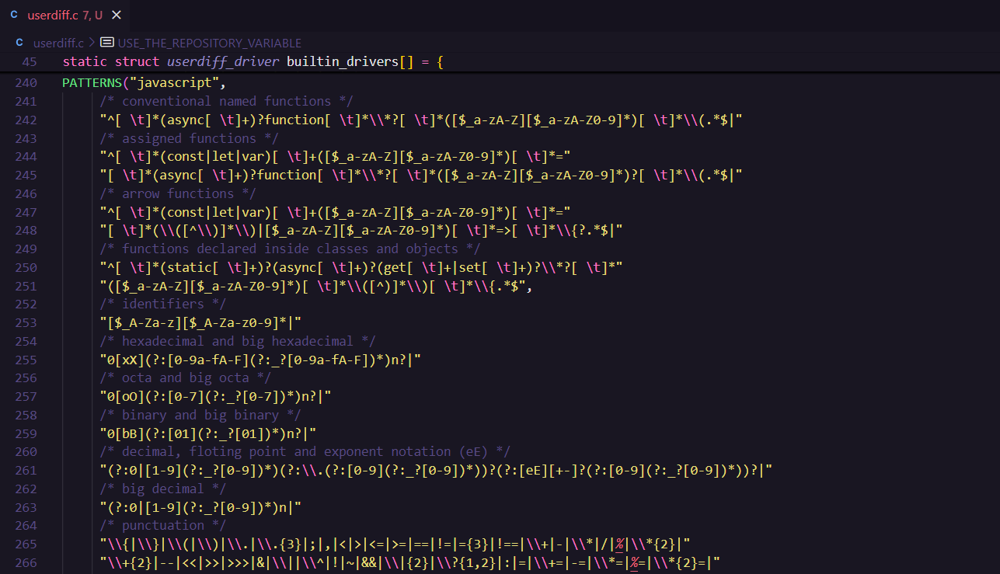Além da regex para reconhecer tokens javascript, eu também havia gerado alguns casos testes para o 't4018' do Git: O teste que trata do reconhecimento das funções por parte dos diff drivers.
Recebi dois feedbacks, um do D. Ben Knoble e outro do Johannes Sixt .
Os mantenedores do Git deram respostas muito positivas, na minha opinião. Dentre os feedbacks, recebi conselhos de estilo de código, pitacos de manter o estilo de código do Git, discussão sobre submissões antigas, sugestões, demandas e outras coisas.
O Johannes Sixt mandou a seguinte mensagem elencando submissões antigas que tem a ver com o que eu estou fazendo:
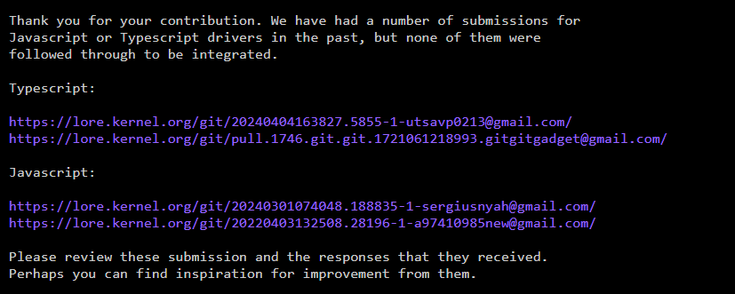Além da sugestão de estudar essas contribuições, foram feitos alguns pedidos:
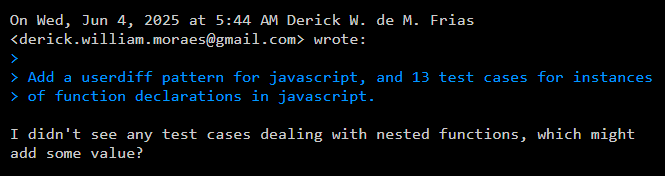 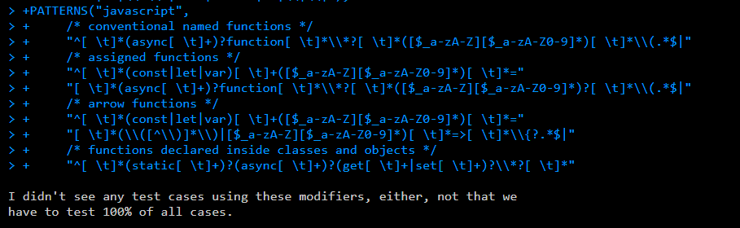Os mantenedores do Git são bastante criteriosos com o estilo de código da base de código. O Lucas Oshiro já tinha me avisado disso. Eu recebi alguns pitacos também, não consegui escapar. Lendo as submissões de outras pessoas, sempre estavam la os mantenedores fazendo pedidos sobre o estilo imperativo das mensagens de commit, sobre a primeira linha em branco dos comentários do tipo /**/ multi-line nos .c, de tentar manter as mensagens submetidas à lista de email com, no máximo, 72 caracteres de comprimento (Don't break the mail clients, maybe?)...
Da minha submissão, disseram:
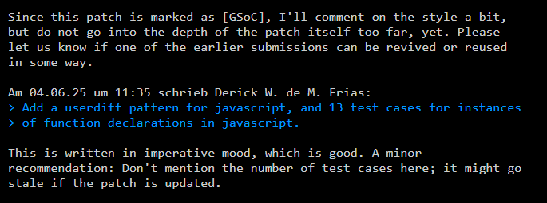 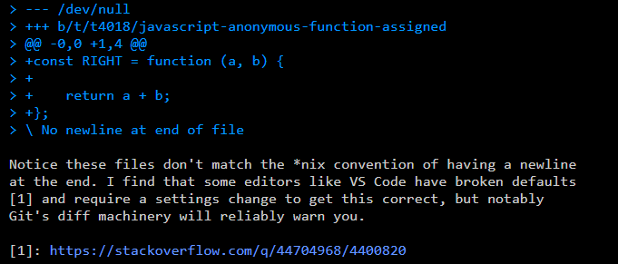 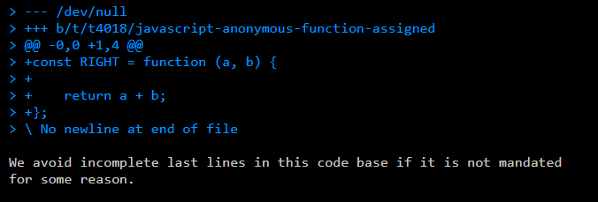Com todos esses comentários em mãos, comecei então a trabalhar na v2 do Patch.
Eu submeti a minha v2 como um patchset, que pode ser visto aqui.
Foi durante o desenvolvimento da v2 que eu comecei a entender melhor como que a regex. A quarta submissão que o Johannes me mandou (ESSA! ) em sua resposta me ajudou muito. Esse envio é de 2022, feito por esse cara Xing Zhi Jiang. Esse patch estava muito bom, e pude esclarecer bastante alguns conceitos de javascript lendo pelas discussões da lista.
Notavelmente nessas discussões está uma diferenciação e explicação bastante sucinta do panorâma moderno da linguagem javascript, das specs ECMAScript e variações como commonJS, discussões sobre os critérios e valores para definir o quê seria importante - ou não - de ser suportado pela regex.
Incorporei no meu patchset(que até o momento era só um patch) os feedbacks do Xing que pediam suporte para sintaxes do commonJS como 'exports.'. Também pude notar um erro que meu diff driver tinha: ele estava reconhecendo palavras reservadas [como while()] e chamadas de funções [como log()] como se fossem declarações de funções. Adicionei uma regra de negação que tinha na regex do Xing para solucionar isso, e adicionei alguns testes inspirados no que ele tinha.
Também me atentei de adicionar uma linha na documentação do diff declarando que ele suporta javascript, e aprendi como criar testes para o 't4034', que testa a parte da word-regex dos PATTERNS implementados. Dentre o que eu implementei nessa v2 temos o PATTERN javascript:
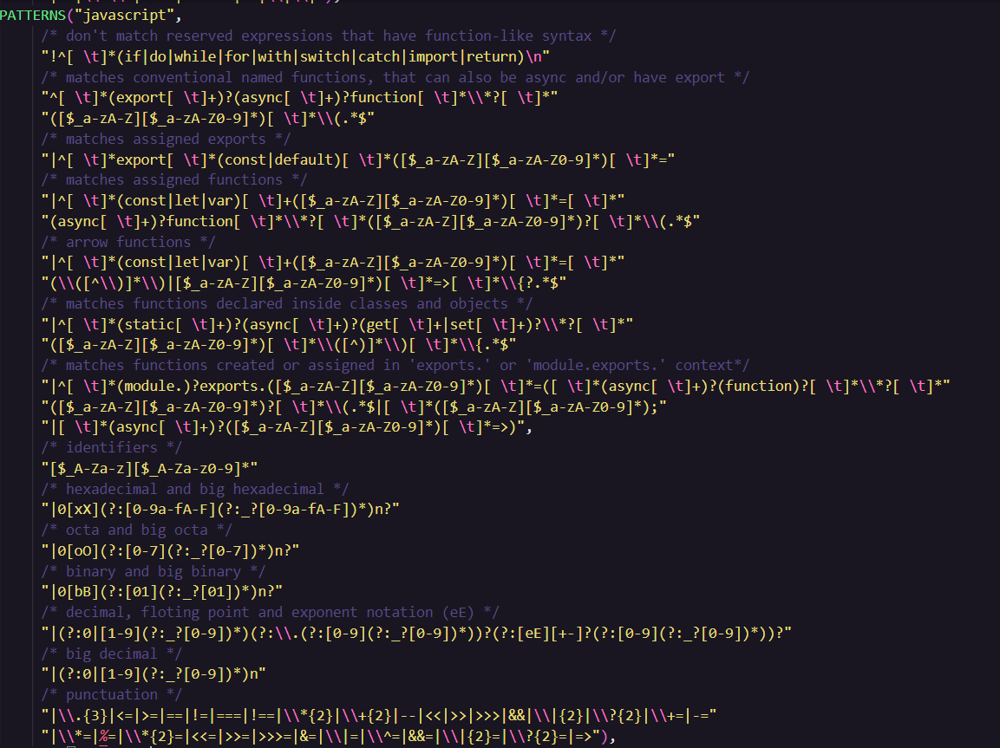Testes 't4018' com sintaxex vanillaJS e commonJS:
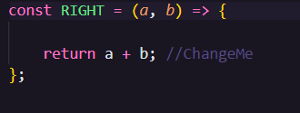 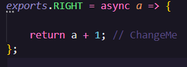Testes expect, pre e post para 't4034'.
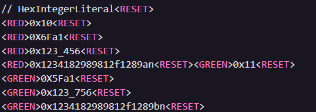 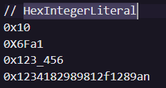 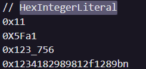Além dos testes 't4018' acima, adicionei mais testes também para funções atribuídas. E para arrow funcs. E suporte para sintaxe 'export'. E 'exports.'. E 'module.exports.'. Acabei adicionando muitos testes. Essa foi a razão do porque preferi mandar o meu patch como um patchset, acabei gernado muitas funções javascript para o teste 't4018', e achei que mandar tudo a-lá-monolíto não seria a melhor coisa.
O envio do patch então ficou da seguinte forma: uma cover letter e 4 patches. O primeiro contendo a regex e a adição na documentação da sua existência. O segundo patch contendo os testes para 't4034'. O terceiro patch com os testes vanillaJS de 't4018', e o quarto patch com os testes commonJS de 't4018'
Por fim enviei a minha v2 recentemente. Ainda não recebi nenhuma resposta maior do que um pitaco do Junio Hamano, de que o diff da minha regex está estranho:
Isto é porque baseei o commit no meu commit antigo, que tinha um PATTERN para javascript ja adicionado (o meu pattern da v1), o que causou estranheza no Junio.
Achei a experiência da contribuição muito legal até aqui. Foi bastante interessante e divertido mexer com todas essas coisas, aprender mais sobre o Git, tomar conhecimento de fofocas e discussões antigas das listas de email, participar em discussões sobre software e etc. Pretendo continuar a contribuição nas férias, e espero que ela seja aceita!